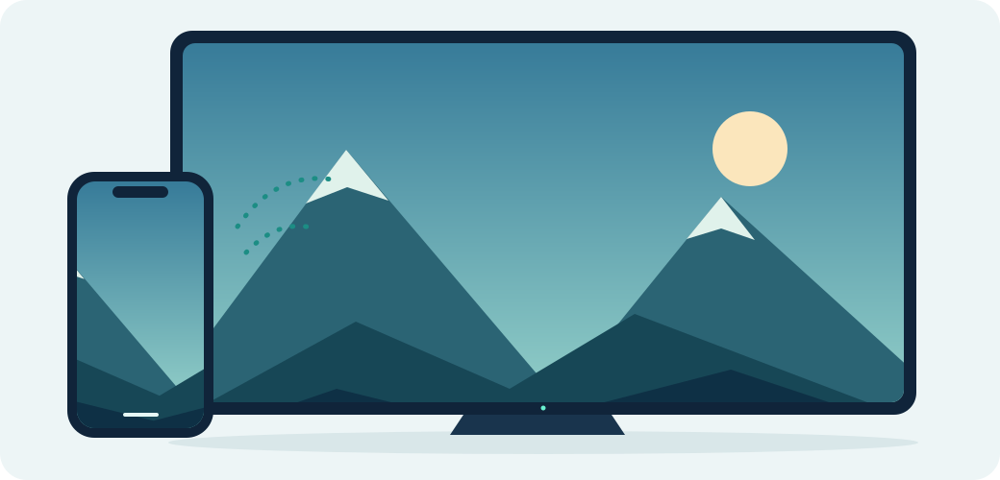

AirPlay for Android TV
Your screen,
a little bigger.
The photos worth sharing. The video everyone should see. Bring them from your iPhone, iPad or Mac to your Android TV.

Same network. A bigger view.
Made for the screen you already have.
Small app.
Room for everyone.
Share from Apple devices
Use the Screen Mirroring controls already on your iPhone, iPad or Mac. No companion phone app needed.
Connect on your network
Keep your sender and TV on the same local network. Choose a receiver name and add an optional PIN.
Open for a reason
Read the code, improve it, or make it your own. Free to use and share under the GNU GPL v3 license.
A few minutes to get started
From download
to big screen.
You’ll need an Android TV or box and an Apple device connected to the same network.
Read the full installation guideInstall on your TV
Download the APK, then open it from your downloads or a file manager. Allow installation from that app when Android asks, and confirm Install.
Browser won’t download? Copy the APK with a USB drive or use ADB.
Open OpenTV-Cast
Start the receiver on your TV. You can change its name and enable a connection PIN in Settings.
Choose your TV
On your iPhone, iPad or Mac, open Control Center, choose Screen Mirroring, and select OpenTV-Cast (or your saved receiver name).
Built in the open
Give your TV
a new connection.
This is an early preview. Tell us how it works on your TV and help make the next version better.
Download APKAndroid confirms installation after download.
OpenTV-Cast {{VERSION}}
{{STATUS}}
- Package
- Universal APK · {{SIZE}}
- Architectures
- ARM64 / ARM32 / x86_64
- Minimum OS
- Android 6.0 (API 23)
- License
- GNU GPL v3
Check the APK fingerprint
SHA-256
{{SHA256}}Before you press play.
Will it work on my TV?
The APK targets Android TV, Google TV and Android boxes on API 23 or newer. Hardware decoding, firmware and network setup affect results, and compatibility testing is still in progress. Samsung Tizen and LG webOS cannot install Android APKs.
Does this replace Chromecast?
No. The preview focuses on AirPlay. Its experimental Cast Connect code needs external registration and a compatible sender; it does not enable arbitrary Android/Chrome casting. Use your TV’s built-in Google Cast where available.
Can I watch protected streaming content?
DRM-protected content is unsupported and may show a black screen or fail. Try ordinary screen mirroring, your own photos or a non-protected video to check your connection.
My TV doesn’t appear, or motion looks jerky.
Keep both devices on the same local network and avoid guest networks with device isolation. Keep the receiver open for the first connection. For jerky motion, try 720p at 30 FPS in Settings. Device performance still needs real-world testing.
Is this a finished production release?
It’s a debug-signed public preview. Build, unit and renderer lifecycle checks have passed, but physical TV smoothness and broad sender compatibility still need testing. Share a device report on GitHub.
Can I use and modify it for free?
Yes, under GNU GPL v3. Keep attribution and provide corresponding source when redistributing modified binaries. OpenTV-Cast builds on android-airplay-server, UxPlay and other open-source work. Read the credits and notices.